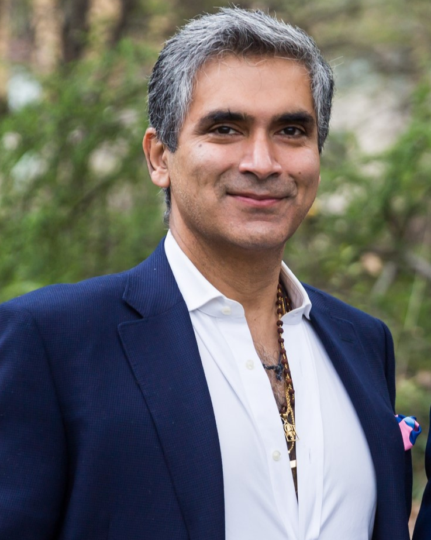
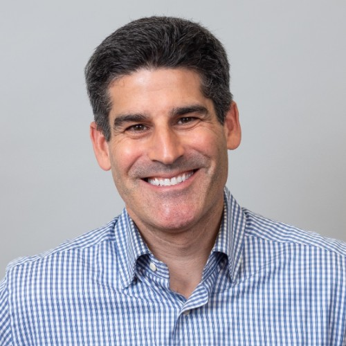
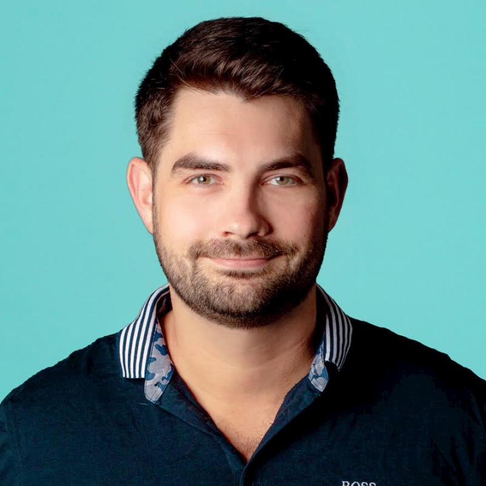

Prior to founding Coastal Up Partners, David spent nearly a decade building Empire
Cornerstone,
where he led the acquisition, repositioning, and management of a portfolio of
Brooklyn, New York, mixed-use and multi-family residential properties,
generating very strong investor returns.
David holds a B.S. in Finance and a B.A. in Real Estate from the University of
Denver, and an M.B.A with a dual focus in Finance and Construction Management from the University
of Denver’s Daniels School of Business.
He has lectured on real estate and finance at Yale University, and recruits M.B.A.
candidates for the University of Denver.
He currently serves as Treasurer of the Ocean Medicine Foundation. David is
licensed as a real estate professional in New York and Colorado.

Pavan M. Uttam
Principal & Founder, Coastal UP Partners
×
Pavan M. Uttam
As principal and co-founder of Coastal UP Partners,
Pavan works with HNW individuals and family offices to
allocate their funds in real estate as an asset class.
He has worked in the capital raise, acquisition, repositioning and development of properties in Manhattan,
Brooklyn & the East Coast as part of the GP/Asset management team.
Assets under management include portfolios of Single Family Rentals (SFR),
Multi-family and Hospitality properties.
Pavan has a B.S. in Finance & Marketing from the prestigious McIntire School of Commerce at the University of Virginia.
Among Pavan’s strengths is his relationships with business leaders and entrepreneurs globally.

James Goody,CPA
CFO, Coastal UP Partners
×
James Goody, CPA
James has been directly involved in the operation and ownership of over $6B of commercial
and residential real estate including over 40,000 apartment units.
Key previous roles include SVP and CFO of one of the largest and oldest vertically integrated real estate investment companies in San Francisco
that owns a $3B portfolio of apartments and commercial properties,
National Director of Real Estate and Unique Assets at First Republic Bank,
and CFO and Co-Founder of both Bay Equity Real Estate Acquisitions and Renovation General Contractors.
His most recent role prior to joining Coastal UP was Principal / CFO of a vertically integrated real estate investment company
that is backed by Goldman Sachs and Carlyle Group and owns a $2B apartment and single-family real estate portfolio.

Lucas Umbreit
Investments, Coastal UP Partners
×
Lucas Umbreit
A Professional in Real Estate and Private Equity with $1bn investments experience throughout Europe
and the US. Lucas has been mostly focused on the principal equity side throughout his 10-year career
including a wide range of asset classes and investment strategies.
He holds a M.Sc. in Investment Banking and Capital Markets from London School of Business and Finance, a B.A. (Hons) in Business Management from the University of Sunderland
and a Diploma in International Business Management from the EBC Hochschule in Berlin.